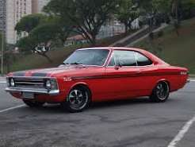

meu primeiro post
Por: Kymberly Paolaboas-vindas ao meu novo blog! Aqui vou compartilhar dicas de programação e curiosidades da área de tecnologia.

Meu blog tech
vou compartilhar conhecimentos sobre tecnologia e programação
O Chevrolet Opala marcou a história automotiva como o primeiro veículo de passeio fabricado pela General Motors no Brasil, mantendo-se em produção entre 1968 e 1992. O modelo uniu o design europeu à robustez mecânica norte-americana, tornando-se um ícone cultural sobre rodas.Principais Pilares do LegadoEsportividade SS: Versões icônicas com faixas esportivas, bancos individuais e o potente motor de seis cilindros.Luxo Diplomata: O ápice do conforto executivo nacional no início dos anos 1990, equipado com acabamento premium.Família Caravan: A versão perua que dominou as estradas brasileiras, oferecendo amplo espaço e versatilidade.Motor 4.1 Litros: O lendário motor de seis cilindros em linha, famoso por seu torque bruto e ronco inconfundível.Para onde quer direcionar nossa conversa? Posso detalhar a ficha técnica do motor 250-S, listar os valores de mercado atuais para colecionadores ou explicar as regras para obter a Placa Preta.As respostas da IA podem conter erros.
boas-vindas ao meu novo blog! Aqui vou compartilhar dicas de programação e curiosidades da área de tecnologia.